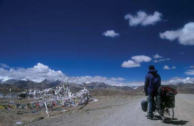
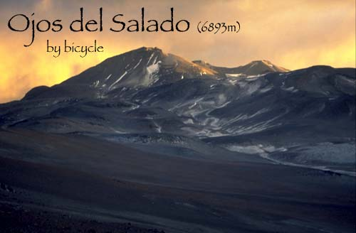

FutureWho knows what the future will bring... ? |
 |
(Outlook from Yarle Shung La, 5140m, my last pass in Tibet) |
It won't be possible to go on a longer trip in the
coming years. But there will hopefully be time for short excursions. |
------------------------------------------------------------------------------------------------------------------
|
| Here a preview of an idea that fascinates me at the
moment: |
|  |
(Photo courtesy by Hartmut Bielefeldt - www.bielefeldt.de) |
Ojos del Salado is at 6893m probably the highest volcano on Earth. The summit lies in a very remote part of the Puna de Atacama, the Argentine-Chilean Altiplano. Why not start cycling at sea level, go all the way up to basecamp and have a try at the summit? This is an idea, that fascinates me for quite some years now... The adventure carries the obvious risks of frequent high altitude storms, cold, remoteness, lack of water and of course the thin air. There's quite a bit of planning and preparation ahead of me. |